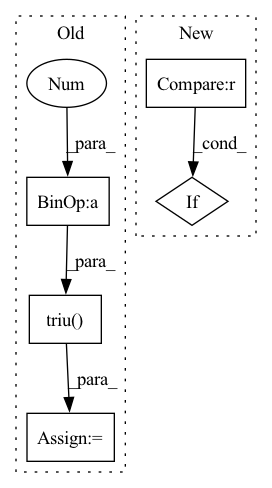

Pattern ID :39734
Before Change
)
// TODO, use registered buffer
causal_mask = paddle.tensor.triu( paddle.ones((input_shape[-1], input_shape[-1])) * -1e4 , diagonal=1)
if past_key_values_length > 0:
causal_mask = paddle.concat(
[
paddle.zeros([input_shape[-1], past_key_values_length], dtype=causal_mask.dtype),
causal_mask,
],
axis=-1,
)
if attention_mask is not None:
if len(attention_mask.shape) == 2:
attention_mask = attention_mask[:, None, None, :]
attention_mask = attention_mask + causal_mask
else:
attention_mask = causal_mask
// The tensor returned by triu not in static graph.
attention_mask.stop_gradient = TrueAfter Change
seq_length_with_past = input_shape[-1] + past_key_values_length
if attention_mask is None :
attention_mask = paddle.ones((input_shape[0], seq_length_with_past), dtype=paddle.bool)
embedding_output = self.embeddings(In pattern: SUPERPATTERN
Frequency: 3
Non-data size: 5
Instances Fragment ID: 113175516
Project Name: paddlepaddle/paddlenlp
Commit Name: d7a059b2f99e377f887c530cec97bf719730acd7
Time: 2023-04-27
Author: 1435130236@qq.com
File Name: paddlenlp/transformers/opt/modeling.py
M Class Name: OPTModel
N Class Name: OPTModel
M Method Name: forward(10)
N Method Name: forward(10)
M Parent Class: OPTPretrainedModel
N Parent Class: OPTPretrainedModel
M File Name: paddlenlp/transformers/opt/modeling.py
N File Name: paddlenlp/transformers/opt/modeling.py
M Start Line: 382
M End Line: 415
N Start Line: 880
N End Line: 917
Before Change
mask_shift_len = qlen - mask_len
else:
mask_shift_len = qlen
dec_attn_mask = (torch.triu( all_ones, 1 + mlen)
+ torch.tril(all_ones, -mask_shift_len)).bool()[:, :, None] // -1
// changed to .bool() from .byte() due to Depreciation warning
else:
dec_attn_mask = torch.triu(After Change
// TODO: Possibly make this more efficient (check how much things slow down)
// This part only runs when calling model in "learn" since in "act" we will
// never need padding
if not (padding_mask is None) :
dec_attn_mask.repeat(1,1,bsz)
dec_attn_mask = dec_attn_mask | padding_mask
//print("ATTN SHAPE: ", dec_attn_mask.shape) Fragment ID: 113175513
Project Name: jerrodparker20/adaptive-transformers-in-rl
Commit Name: b5e76b7bc25d417e67143386f818caf8bb0b1d13
Time: 2020-03-21
Author: jerrodparker20@gmail.com
File Name: StableTransformersReplication/transformer_xl.py
M Class Name: MemTransformerLM
N Class Name: MemTransformerLM
M Method Name: _forward(4)
N Method Name: _forward(3)
M Parent Class: nn.Module
N Parent Class: nn.Module
M File Name: StableTransformersReplication/transformer_xl.py
N File Name: StableTransformersReplication/transformer_xl.py
M Start Line: 449
M End Line: 465
N Start Line: 435
N End Line: 459
Before Change
if causal:
i, j = q.shape[-2], k.shape[-2]
causal_mask = torch.ones(i, j, device = q.device, dtype = torch.bool).triu( j - i + 1 )
causal_mask_chunks = causal_mask.split(q_bucket_size, dim = 0)
causal_mask_chunks = list(map(lambda t: t.split(k_bucket_size, dim = -1), causal_mask_chunks))
if exists(attn_bias):After Change
q_start_index = q_index * q_bucket_size
k_start_index = k_index * k_bucket_size
if causal and k_start_index > (q_start_index + q_chunk.shape[-2] - 1) :
// if chunk is to be all masked out causally, skip
continue
Fragment ID: 113175511
Project Name: lucidrains/memory-efficient-attention-pytorch
Commit Name: 4be82443e060be7224be5e8247c097fcc84aa72d
Time: 2022-03-20
Author: lucidrains@gmail.com
File Name: memory_efficient_attention_pytorch/memory_efficient_attention.py
M Class Name: AnonimousClass
N Class Name: AnonimousClass
M Method Name: memory_efficient_attention(9)
N Method Name: memory_efficient_attention(9)
M Parent Class:
N Parent Class:
M File Name: memory_efficient_attention_pytorch/memory_efficient_attention.py
N File Name: memory_efficient_attention_pytorch/memory_efficient_attention.py
M Start Line: 87
M End Line: 136
N Start Line: 114
N End Line: 136